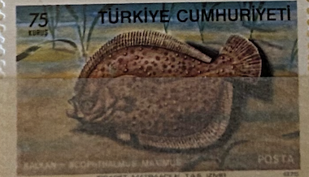
| SOURCE | TITLE| IMAGE MATCH | click to source page |
| marinespecies.org | World Register of Introduced Marine Species (WRiMS) | 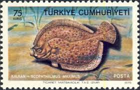 |
| www.fishbase.se | Picture Summary | 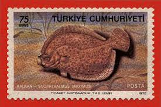 |
| www.etsy.com | Fluke Open Edition Print by Flick Ford, Saltwater Food Fish ... | 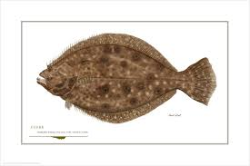 |
| animalia.bio | Plate fish - Facts, Diet, Habitat & Pictures on Animalia.bio | 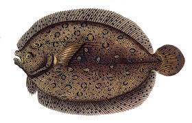 |
| www.etsy.com | Southern Flounder Art Print: Minimalist Fish Illustration - Etsy | 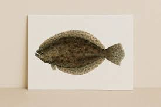 |
| fishspecies.dnrec.delaware.gov | Winter Flounder - Delaware Fish Facts | 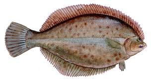 |
| www.ebay.com | 1935 Player's Sea Fishes #43 Brill 122E | eBay | 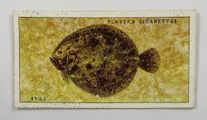 |
| www.zazzle.com | Vintage Flounder Fish Illustration (1919) Poster | Zazzle | 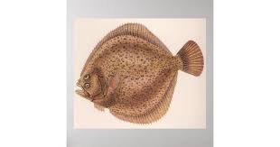 |
| www.seafoodsource.com | Turbot | SeafoodSource | 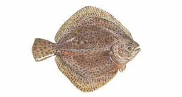 |
| www.youtube.com | Flounder curry recipe - YouTube | 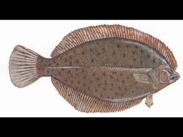 |
| en.wikipedia.org | Summer flounder - Wikipedia | 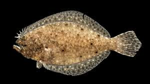 |
| www.eregulations.com | Rhode Island Commonly Caught Species - Rhode Island ... | 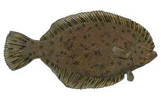 |
| ciglr.seas.umich.edu | FATE Proposal | CIGLR |  |
| commons.wikimedia.org | File:FMIB 48896 Turbot.jpeg - Wikimedia Commons | 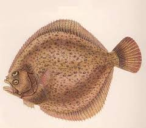 |
| fishspecies.dnrec.delaware.gov | Windowpane Flounder - Delaware Fish Facts | 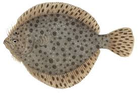 |
| beachchairscientist.com | What is the difference between a summer and winter flounder? | 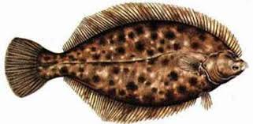 |
| johnfurches.com | Flounder – The John Furches Gallery |  |
| animaldiversity.org | Bothus lunatus (Flounder) | INFORMATION | Animal Diversity Web | 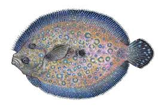 |
| www.yakobifisheries.com | Wild Alaska Halibut Pre-order — Yakobi Fisheries |  |
| tnacifin.com | Southern Flounder | TNACIFIN | Freshwater Information Network | 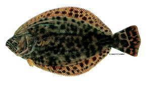 |
| www.ebay.com | TURBOT - 40 + year old English Tobacco Card # 25 | eBay | 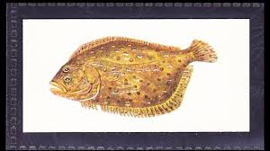 |
| en.wikipedia.org | Black flounder - Wikipedia | 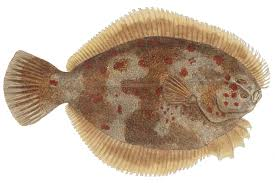 |
| www.facebook.com | What type of flounder is this with three ocellated spots ... | 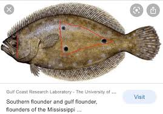 |
| www.starnewsonline.com | Editorial - Floundering in a local Christmas tradition | 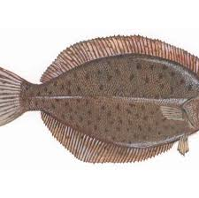 |
| earthlife.net | Fish Classification | What Phylum Or Class Are They In ... | 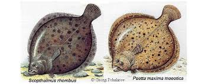 |
| www.youtube.com | Know Your Flatfish Species with this Identification Guide ... | 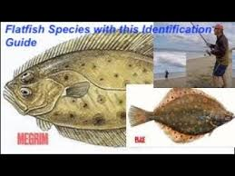 |
| ncwf.org | Breakdown of Southern Flounder Management in North Carolina ... | 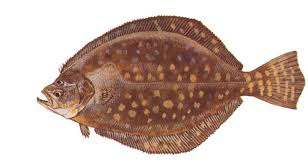 |
| www.seafoodwatch.org | Cortez halibut Halibut seafood recommendation | Seafood Watch | 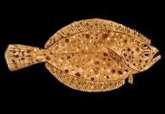 |
| www.seafish.org | Turbot | Seafish | 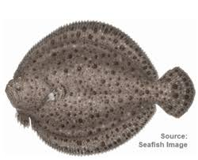 |
| www.stonegateprints.com | Halibut - Stonegate Rare Antique Prints | 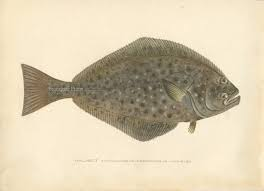 |
| www.inaturalist.org | Turbots (Family Scophthalmidae) · iNaturalist | 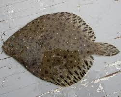 |
| www.capeandislands.org | A Gallery of New England's Saltwater Fish | CAI | 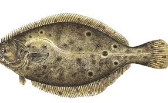 |
| juan-bosco.com | Fishes - juan-bosco.com | 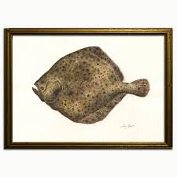 |
| www.naturalnorthflorida.com | Gulf Flounder - Visit Natural North Florida | 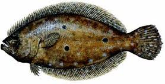 |
| www.deq.nc.gov | Flounder | NC DEQ | 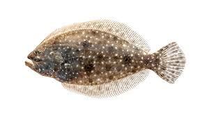 |
| stateportpilot.com | Fishing: Emerging from the freezer – and it feels good ... | 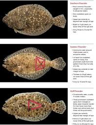 |
| www.savecoastalwildlife.org | WINTER FLOUNDER — Save Coastal Wildlife | 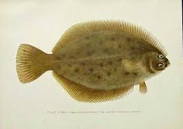 |
| animalia.bio | European flounder - Facts, Diet, Habitat & Pictures on ... | 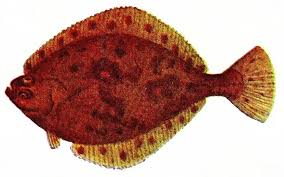 |
| www.hiltonheadfishingcharters.com | Flounder Fishing | Hilton Head Fishing Charters | 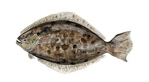 |
| gofishing.agency | Florida Fish Encyclopedia: Guide to Local Species ... | 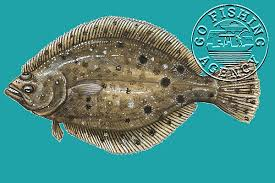 |
| www.otolithonline.com | halibut - Otolith Sustainable Seafood | 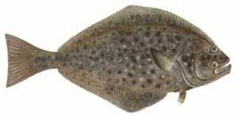 |
| www.fisheries.noaa.gov | Winter Flounder | NOAA Fisheries | 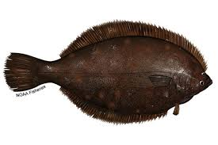 |
| asmfc.org | Winter Flounder - Atlantic States Marine Fisheries Commission | 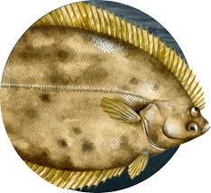 |
| picryl.com | 151. The Spotted Turbot (Pleuronectes maculatus). 152. The ... | 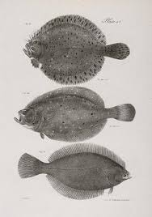 |
| www.sonrisefishing.com | Discover Galveston Bay's Fish Species with Sonrise Fishing. | 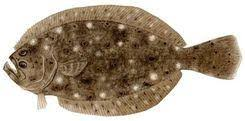 |
| www.reddit.com | What kind of fish is this? : r/Fishing | 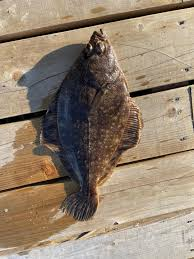 |
| njscuba.net | Flounders ~ New Jersey Scuba Diving | 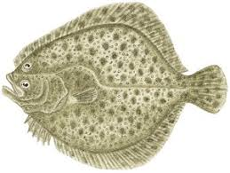 |
| www.rawpixel.com | Brill Fish Images | Free Photos, PNG Stickers, Wallpapers ... | 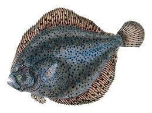 |
| www.coastalcharterstx.com | Gulf Of Mexico Fish Species: What You'll Catch In Port ... | 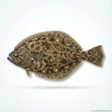 |
| www.inaturalist.org | American Plaice (Hippoglossoides platessoides) · iNaturalist | 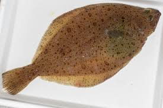 |
| southstream.com | Products List - Southstream Seafoods | 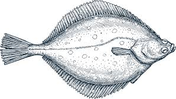 |
| www.facebook.com | Why do some flounder have spots and some have none | 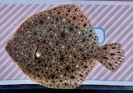 |
| www.etsy.com | Turbot Fish Print. Hand Coloured 1788 Antique French ... | |
| www.obxinshore.com | Flounder.jpg | |
| www.youtube.com | The Tragic Decline of Winter Flounder: Can We Save Them ... | |
| simple.wikipedia.org | Pleuronectidae - Simple English Wikipedia, the free encyclopedia | |
| www.alamy.com | Bothus lunatus Cut Out Stock Images & Pictures - Alamy | |
| www.intaglioantiqueprintsmaps.com | Flounder, Left Eye Flounder, 1905 | |
| www.lookandlearn.com | Sea fishes: Brill stock image | Look and Learn |
{kind=link}
{kind=link}